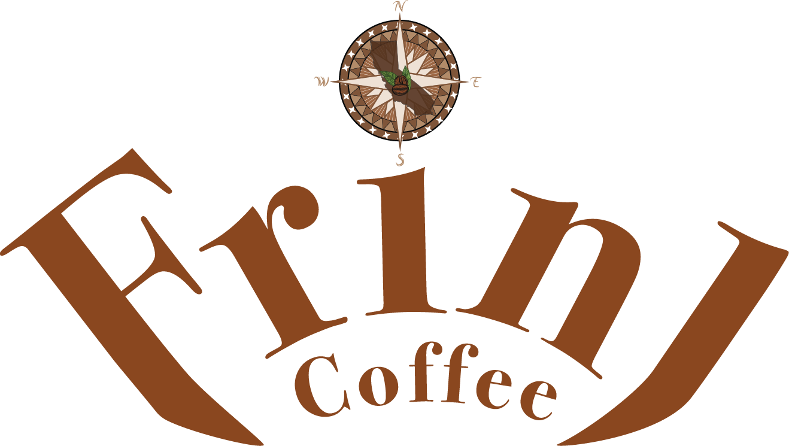
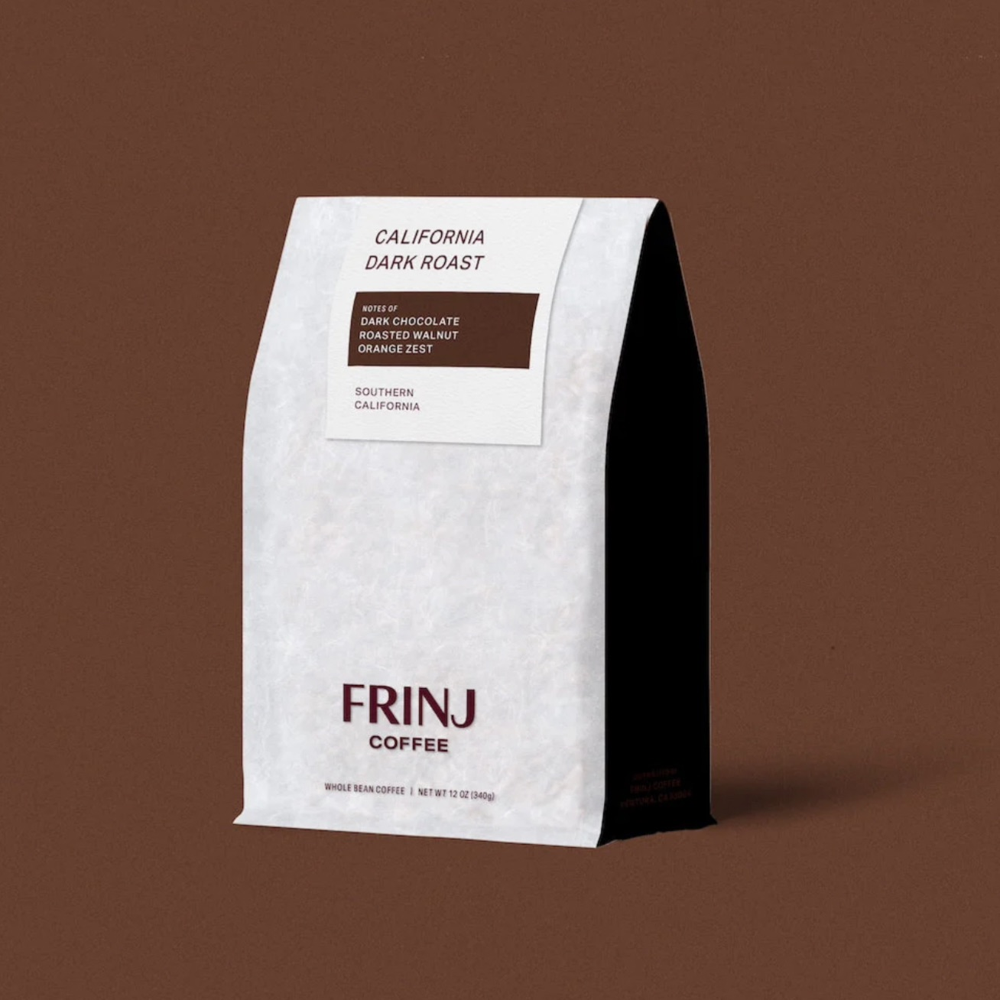
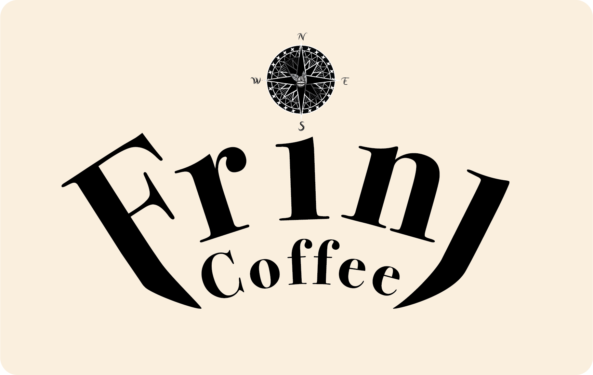
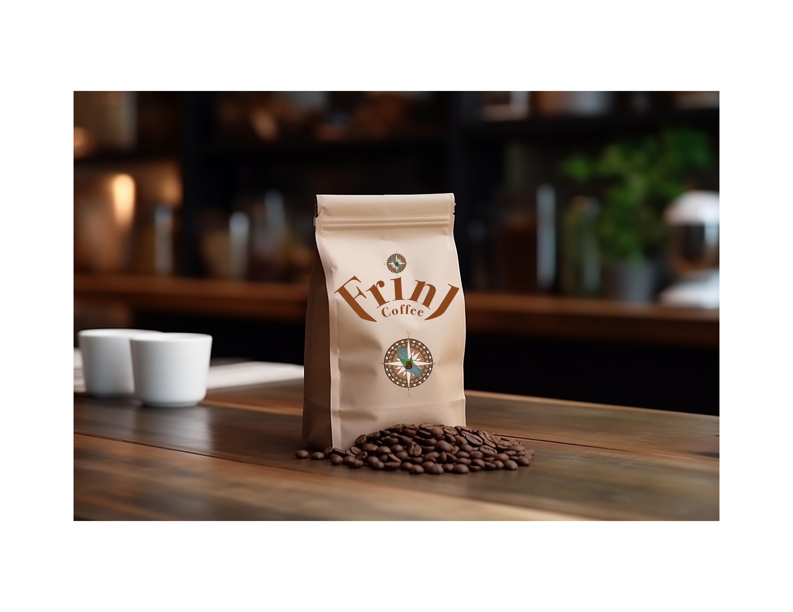

- Client: Frinj Coffee
- Timeline: October 30–November 10, 2026
- Role: Research, Concept Development
- Tools: Illustrator, Photoshop, After Effects
Description:
I began with the original Frinj Coffee logo and refined its structure by converting "Rin" and "coffee" to lowercase for a more modern and balanced appearance. The descenders of the "F" and "J" were extended to frame the word "coffee" creating a cohesive visual flow. To personalize the design further, a compass icon was introduced to replace the tittle, symbolizing Frinj Coffee's connection to exploration and its origin in Santa Barbara, California.

Original Logo
This is the original Frinj Coffee logo from the company's website, which features all capital letters. The design was refined to create a more modern and balanced appearance.

Initial Logo Concept
Here are the various Frinj Coffee logo variations I developed throughout the design process, leading to the creation of my final logo design.

Logo in Different Color Variations
The Frinj Coffee logo is displayed in two color variations — black & white and color — and in different sizes to showcase flexibility across applications.

Logo Construction
The Frinj Coffee logo was constructed using the font Bodoni 72 Bold, with careful attention to the design of the letters and the overall composition to ensure a cohesive and visually appealing result.

Logo Topography
The Frinj Coffee logo was designed with a focus on topography, ensuring that the letters and elements are arranged in a visually pleasing and balanced manner. The design process involved careful consideration of the spacing, alignment, and overall composition to create a cohesive and impactful logo.
Mockups

Coffee Bag Mockup

Instagram Mockup

Coffee Mug Mockup

Man Holding Coffee Cup Mockup
This mockup showcases the Frinj Coffee logo applied across branded merchandise. The design demonstrates the logo's versatility and visual impact in digital and physical applications, maintaining a cohesive brand identity.
Reflection
Frinj Project was a rebranding initiative for a California-based coffee company, focused on creating a cohesive and elevated brand identity. The project's success is reflected in the thoughtful execution of the logo—particularly the intricate detailing above the 'Frinj' name—as well as the supporting mockups and curated color palette. While developing a concept that felt both distinctive and authentic presented initial challenges, these were ultimately resolved through strategic refinement of the logo and custom letterforms, resulting in a unified and impactful visual system.